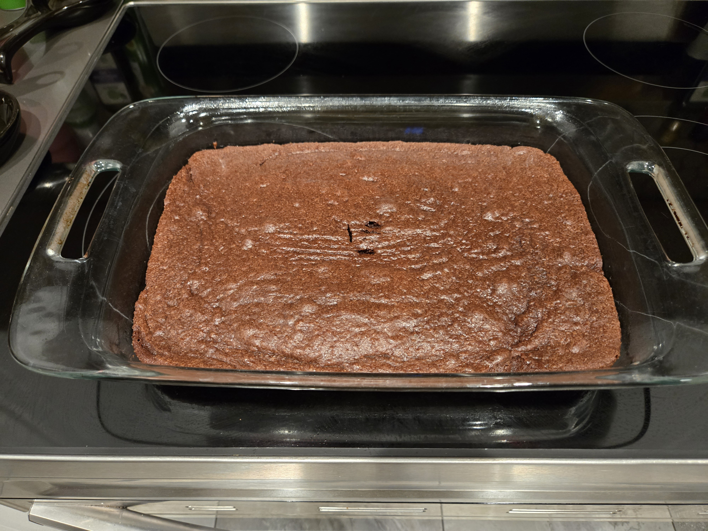

Brownies are an all around favorite dessert. After being made, they disappear rather fast. Brownies are rich in chocolate and satisfy any person with a sweet tooth. While there are countless desserts out there, brownies stick out as a highly popular treat.
You can't go wrong with serving brownies. If you're looking for a dessert that does not disappoint, be sure to follow the recipe below to make brownies that are scrumptious! And keep in mind that there will be no leftovers of this dessert. If you want, you can double the recipe to increase your chances of having possible leftovers.